CODING AGENTS AS PIXEL WORLD MODELS
traex/DeepSeek-V4.1-Flash · 0183
点击播放 · 原生 RGB 像素
逐轮保存的候选
回放视频、检查图与代码变化。
每份候选均可单独播放。实际图片检查记录在下方工具轨迹中。
候选 01播放与检查图
点击播放 · 原生 RGB 像素

展开代码变化
--- 上一保存版本
+++ 本次保存版本
@@ -0,0 +1,150 @@
+from pathlib import Path
+
+import cv2
+import numpy as np
+from PIL import Image
+
+import artifact_io
+
+
+ROOT = Path(__file__).resolve().parent
+FRAME_COUNT = 20
+WIDTH = 256
+HEIGHT = 144
+
+
+def _background_estimate(image: np.ndarray) -> np.ndarray:
+ """Smoothly extrapolate the blue-gray backdrop beneath the gripper."""
+ estimate = image.astype(np.float32).copy()
+ rows = np.arange(0, 24)
+ side_x = np.r_[np.arange(72, 106), np.arange(156, 190)]
+ center_x = np.arange(104, 158)
+ for y in rows:
+ for channel in range(3):
+ fit = np.polyfit(side_x, image[y, side_x, channel], 2)
+ estimate[y, center_x, channel] = np.polyval(fit, center_x)
+ return estimate
+
+
+def _jaw_mask(image: np.ndarray) -> np.ndarray:
+ hsv = cv2.cvtColor(image, cv2.COLOR_RGB2HSV)
+ background = _background_estimate(image)
+ residual = np.max(np.abs(image.astype(np.float32) - background), axis=2)
+
+ region = np.zeros(image.shape[:2], dtype=np.uint8)
+ region[0:24, 105:157] = 255
+
+ # The orange jaws and their charcoal edges stand well away from the
+ # surrounding backdrop. Exclude clean blue pixels, which belong to the
+ # block seen through the open jaws.
+ colored = (
+ (hsv[:, :, 1] > 65)
+ & (hsv[:, :, 2] > 28)
+ & ((hsv[:, :, 0] < 30) | (hsv[:, :, 0] > 168))
+ )
+ dark = image.max(axis=2) < 92
+ changed = residual > 17
+ mask = ((colored | dark | changed) & (region > 0)).astype(np.uint8) * 255
+
+ mask = cv2.morphologyEx(mask, cv2.MORPH_CLOSE, np.ones((2, 2), np.uint8))
+ mask = cv2.dilate(mask, np.ones((2, 2), np.uint8), iterations=1)
+ return mask
+
+
+def _soft_alpha(mask: np.ndarray) -> np.ndarray:
+ alpha = cv2.GaussianBlur(mask.astype(np.float32) / 255.0, (3, 3), 0.55)
+ alpha = np.clip((alpha - 0.08) / 0.84, 0.0, 1.0)
+ return alpha
+
+
+def _translate_rgba(rgba: np.ndarray, dx: float, dy: float) -> np.ndarray:
+ matrix = np.float32([[1.0, 0.0, dx], [0.0, 1.0, dy]])
+ return cv2.warpAffine(
+ rgba,
+ matrix,
+ (WIDTH, HEIGHT),
+ flags=cv2.INTER_LINEAR,
+ borderMode=cv2.BORDER_CONSTANT,
+ borderValue=(0, 0, 0, 0),
+ )
+
+
+def _composite(base: np.ndarray, layer: np.ndarray) -> np.ndarray:
+ base_f = base.astype(np.float32)
+ rgb = layer[:, :, :3].astype(np.float32)
+ alpha = layer[:, :, 3:4].astype(np.float32) / 255.0
+ result = rgb * alpha + base_f * (1.0 - alpha)
+ return np.clip(result, 0, 255).round().astype(np.uint8)
+
+
+def build_frames(first_frame: np.ndarray) -> np.ndarray:
+ jaw_mask = _jaw_mask(first_frame)
+ alpha = _soft_alpha(jaw_mask)
+
+ bgr = cv2.cvtColor(first_frame, cv2.COLOR_RGB2BGR)
+ clean_bgr = cv2.inpaint(bgr, jaw_mask, 3, cv2.INPAINT_TELEA)
+ clean = cv2.cvtColor(clean_bgr, cv2.COLOR_BGR2RGB)
+
+ jaw_rgba = np.dstack((first_frame, (alpha * 255.0).round().astype(np.uint8)))
+
+ # The tool pauses for one sampled frame, then withdraws smoothly. The
+ # fractional offsets retain subpixel motion at the native 4 fps cadence.
+ offsets = np.array(
+ [
+ 0.0,
+ 0.0,
+ -0.45,
+ -1.15,
+ -2.05,
+ -3.15,
+ -4.45,
+ -5.95,
+ -7.70,
+ -9.70,
+ -12.0,
+ -14.7,
+ -17.8,
+ -21.4,
+ -25.5,
+ -30.0,
+ -35.0,
+ -40.0,
+ -45.0,
+ -50.0,
+ ],
+ dtype=np.float32,
+ )
+
+ frames = []
+ for index, offset in enumerate(offsets):
+ if index == 0:
+ frame = first_frame.copy()
+ else:
+ # A tiny outward separation makes the release read as a jaw
+ # opening rather than a solid tool translating as one piece.
+ opening = max(0.0, (-offset - 0.6) * 0.035)
+ left = jaw_rgba.copy()
+ right = jaw_rgba.copy()
+ left[:, 133:] = 0
+ right[:, :134] = 0
+ layer = _translate_rgba(left, -opening, offset)
+ other = _translate_rgba(right, opening, offset)
+ layer = np.where(other[:, :, 3:4] > layer[:, :, 3:4], other, layer)
+ frame = _composite(clean, layer)
+ frames.append(frame)
+
+ frames = np.asarray(frames, dtype=np.uint8)
+ assert frames.shape == (FRAME_COUNT, HEIGHT, WIDTH, 3)
+ assert np.array_equal(frames[0], first_frame)
+ return frames
+
+
+def main() -> None:
+ first_frame = np.asarray(Image.open(ROOT / "first_frame.png").convert("RGB"))
+ assert first_frame.shape == (HEIGHT, WIDTH, 3)
+ frames = build_frames(first_frame)
+ artifact_io.save(frames, ROOT)
+
+
+if __name__ == "__main__":
+ main()
候选 02播放与检查图
点击播放 · 原生 RGB 像素

展开代码变化
--- 上一保存版本
+++ 本次保存版本
@@ -13,23 +13,8 @@
HEIGHT = 144
-def _background_estimate(image: np.ndarray) -> np.ndarray:
- """Smoothly extrapolate the blue-gray backdrop beneath the gripper."""
- estimate = image.astype(np.float32).copy()
- rows = np.arange(0, 24)
- side_x = np.r_[np.arange(72, 106), np.arange(156, 190)]
- center_x = np.arange(104, 158)
- for y in rows:
- for channel in range(3):
- fit = np.polyfit(side_x, image[y, side_x, channel], 2)
- estimate[y, center_x, channel] = np.polyval(fit, center_x)
- return estimate
-
-
def _jaw_mask(image: np.ndarray) -> np.ndarray:
hsv = cv2.cvtColor(image, cv2.COLOR_RGB2HSV)
- background = _background_estimate(image)
- residual = np.max(np.abs(image.astype(np.float32) - background), axis=2)
region = np.zeros(image.shape[:2], dtype=np.uint8)
region[0:24, 105:157] = 255
@@ -43,12 +28,46 @@
& ((hsv[:, :, 0] < 30) | (hsv[:, :, 0] > 168))
)
dark = image.max(axis=2) < 92
- changed = residual > 17
- mask = ((colored | dark | changed) & (region > 0)).astype(np.uint8) * 255
+ blue = (
+ (hsv[:, :, 0] >= 78)
+ & (hsv[:, :, 0] <= 122)
+ & (hsv[:, :, 1] > 55)
+ & (hsv[:, :, 2] > 55)
+ )
+ mask = ((colored | dark) & ~blue & (region > 0)).astype(np.uint8) * 255
mask = cv2.morphologyEx(mask, cv2.MORPH_CLOSE, np.ones((2, 2), np.uint8))
mask = cv2.dilate(mask, np.ones((2, 2), np.uint8), iterations=1)
+ mask[blue] = 0
return mask
+
+
+def _clean_background(image: np.ndarray, mask: np.ndarray) -> np.ndarray:
+ """Fill the narrow jaw footprints along the existing backdrop gradient."""
+ clean = image.copy()
+ rows = mask.shape[0]
+ for y in range(rows):
+ occupied = mask[y] > 0
+ if not occupied.any():
+ continue
+ starts = np.flatnonzero(occupied & ~np.r_[False, occupied[:-1]])
+ ends = np.flatnonzero(occupied & ~np.r_[occupied[1:], False])
+ for start, end in zip(starts, ends):
+ left = start - 1
+ right = end + 1
+ if left >= 0 and right < WIDTH:
+ width = right - left
+ blend = (np.arange(start, end + 1) - left) / width
+ color = (
+ image[y, left].astype(np.float32) * (1.0 - blend[:, None])
+ + image[y, right].astype(np.float32) * blend[:, None]
+ )
+ clean[y, start : end + 1] = np.clip(color, 0, 255).round().astype(np.uint8)
+ elif right < WIDTH:
+ clean[y, start : end + 1] = image[y, right]
+ elif left >= 0:
+ clean[y, start : end + 1] = image[y, left]
+ return clean
def _soft_alpha(mask: np.ndarray) -> np.ndarray:
@@ -81,54 +100,74 @@
jaw_mask = _jaw_mask(first_frame)
alpha = _soft_alpha(jaw_mask)
- bgr = cv2.cvtColor(first_frame, cv2.COLOR_RGB2BGR)
- clean_bgr = cv2.inpaint(bgr, jaw_mask, 3, cv2.INPAINT_TELEA)
- clean = cv2.cvtColor(clean_bgr, cv2.COLOR_BGR2RGB)
+ clean = _clean_background(first_frame, jaw_mask)
jaw_rgba = np.dstack((first_frame, (alpha * 255.0).round().astype(np.uint8)))
- # The tool pauses for one sampled frame, then withdraws smoothly. The
+ # The jaws part slightly, then withdraw with smooth acceleration. The
# fractional offsets retain subpixel motion at the native 4 fps cadence.
offsets = np.array(
[
0.0,
+ -0.05,
+ -0.20,
+ -0.50,
+ -0.95,
+ -1.55,
+ -2.30,
+ -3.20,
+ -4.30,
+ -5.60,
+ -7.10,
+ -8.80,
+ -10.70,
+ -12.80,
+ -15.20,
+ -17.80,
+ -20.80,
+ -24.30,
+ -28.30,
+ -32.80,
+ ],
+ dtype=np.float32,
+ )
+ opening = np.array(
+ [
0.0,
- -0.45,
- -1.15,
- -2.05,
- -3.15,
- -4.45,
- -5.95,
- -7.70,
- -9.70,
- -12.0,
- -14.7,
- -17.8,
- -21.4,
- -25.5,
- -30.0,
- -35.0,
- -40.0,
- -45.0,
- -50.0,
+ 0.20,
+ 0.48,
+ 0.80,
+ 1.10,
+ 1.35,
+ 1.55,
+ 1.72,
+ 1.84,
+ 1.92,
+ 1.97,
+ 2.0,
+ 2.0,
+ 2.0,
+ 2.0,
+ 2.0,
+ 2.0,
+ 2.0,
+ 2.0,
+ 2.0,
],
dtype=np.float32,
)
frames = []
- for index, offset in enumerate(offsets):
+ for index, (offset, gap) in enumerate(zip(offsets, opening)):
if index == 0:
frame = first_frame.copy()
else:
- # A tiny outward separation makes the release read as a jaw
- # opening rather than a solid tool translating as one piece.
- opening = max(0.0, (-offset - 0.6) * 0.035)
left = jaw_rgba.copy()
right = jaw_rgba.copy()
left[:, 133:] = 0
right[:, :134] = 0
- layer = _translate_rgba(left, -opening, offset)
- other = _translate_rgba(right, opening, offset)
+ layer = _translate_rgba(left, -gap, offset)
+ other = _translate_rgba(right, gap, offset)
layer = np.where(other[:, :, 3:4] > layer[:, :, 3:4], other, layer)
frame = _composite(clean, layer)
frames.append(frame)
候选 03播放与检查图
点击播放 · 原生 RGB 像素
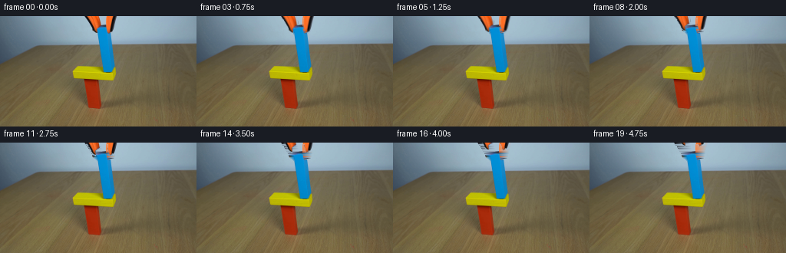
展开代码变化
--- 上一保存版本
+++ 本次保存版本
@@ -111,23 +111,23 @@
0.0,
-0.05,
-0.20,
- -0.50,
- -0.95,
- -1.55,
- -2.30,
+ -0.45,
+ -0.80,
+ -1.25,
+ -1.80,
+ -2.45,
-3.20,
- -4.30,
- -5.60,
- -7.10,
- -8.80,
- -10.70,
+ -4.05,
+ -5.00,
+ -6.05,
+ -7.20,
+ -8.45,
+ -9.80,
+ -11.25,
-12.80,
- -15.20,
- -17.80,
- -20.80,
- -24.30,
- -28.30,
- -32.80,
+ -14.45,
+ -16.20,
+ -18.10,
],
dtype=np.float32,
)
可观测工具轨迹
实际执行的命令与返回图片。
命令 1exit 0
/bin/bash -c "pwd && rg --files -g '"'!**/.git/**'"' | sed -n '1,160p'"
命令 2exit 0
/bin/bash -c 'cat prompt.txt'
命令 3exit 0
/bin/bash -c 'cat GENERATION_RULES.md'
命令 4exit 0
/bin/bash -c "find . -maxdepth 2 -type f -printf '%p %s bytes\\n' | sort"
命令 5exit 0
/bin/bash -c 'cat artifact_io.py'
命令 6exit 0
/bin/bash -c 'cat player_template.html'
命令 7exit 127
/bin/bash -c "file first_frame.png && python - <<'PY'
from PIL import Image
im=Image.open('first_frame.png')
print(im.mode, im.size)
PY"命令 8exit 0
/bin/bash -c "python - <<'PY'
from PIL import Image
im=Image.open('first_frame.png')
im.crop((70,0,180,135)).resize((440,540), Image.Resampling.NEAREST).save('.tmp/crop.png')
PY"命令 9exit 0
/bin/bash -c "python - <<'PY' mods=['numpy','PIL','cv2','scipy','skimage'] for m in mods: try: mod=__import__(m) print(m, getattr(mod,'__version__','ok')) except Exception as e: print(m, 'NO', e) PY"
命令 10exit 0
/bin/bash -c "python - <<'PY'
from PIL import Image
import numpy as np
im=np.array(Image.open('first_frame.png').convert('RGB'))
# print prominent colors/counts in region x80:170,y0:140 quantized 8
r=im[0:140,80:170]
q=(r//8)*8
u,c=np.unique(q.reshape(-1,3),axis=0,return_counts=True)
idx=np.argsort(c)[-30:][::-1]
for i in idx: print(tuple(u[i]),c[i])
PY"命令 11exit 0
/bin/bash -c "python - <<'PY'
from PIL import Image
import numpy as np
im=np.array(Image.open('first_frame.png').convert('RGB'))
# blue mask broad hsv
import cv2
hsv=cv2.cvtColor(im,cv2.COLOR_RGB2HSV)
for name,lo,hi in [
('blue',(85,120,80),(115,255,255)),
('orange',(0,140,120),(20,255,255)),
('yellow',(20,120,100),(40,255,255)),
('red',(0,120,70),(10,255,255))]:
m=cv2.inRange(hsv,np.array(lo),np.array(hi))>0
ys,xs=np.where(m)
print(name, len(xs), (xs.min(),ys.min(),xs.max(),ys.max()) if len(xs) else None)
# per row x ranges selected rows
for y in [0,5,10,14,20,40,60,65,70,75,78,80,85,90,95,100,110,120,130]:
xx=np.where(m[y])[0]
if len(xx): print(y, xx.min(), xx.max(), len(xx))
PY"命令 12exit 0
/bin/bash -c "python - <<'PY'
from PIL import Image
im=Image.open('first_frame.png')
im.resize((1024,576),Image.Resampling.NEAREST).save('.tmp/full4x.png')
PY"命令 13exit 0
/bin/bash -c "python - <<'PY'
from PIL import Image
import numpy as np, cv2
im=np.array(Image.open('first_frame.png').convert('RGB'))
hsv=cv2.cvtColor(im,cv2.COLOR_RGB2HSV)
# broad blue then morphology fill
m=cv2.inRange(hsv,np.array([80,70,30]),np.array([120,255,255]))
m=cv2.morphologyEx(m,cv2.MORPH_CLOSE,np.ones((3,3),np.uint8))
contours,_=cv2.findContours(m,cv2.RETR_EXTERNAL,cv2.CHAIN_APPROX_SIMPLE)
c=max(contours,key=cv2.contourArea)
print('blue contour area',cv2.contourArea(c),cv2.boundingRect(c))
# convex hull to fill dark outline
h=cv2.convexHull(c)
mm=np.zeros_like(m); cv2.fillPoly(mm,[h],255)
# erode? save overlay
ov=im.copy(); ov[mm>0]=(ov[mm>0]*.5+np.array([255,0,255])*.5).astype(np.uint8)
Image.fromarray(ov).resize((1024,576),Image.Resampling.NEAREST).save('.tmp/blue_overlay.png')
# gripper dark/orange in top area
reg=np.zeros_like(m); reg[:22,100:160]=255
sat=hsv[:,:,1]; val=hsv[:,:,2]; hue=hsv[:,:,0]
gm=((sat>110)&(val>40)&(((hue<30)|(hue>170)))) & (reg>0)
gm=gm.astype(np.uint8)*255
# close
gm=cv2.morphologyEx(gm,cv2.MORPH_CLOSE,np.ones((3,3),np.uint8))
# fill contours
cs,_=cv2.findContours(gm,cv2.RETR_EXTERNAL,cv2.CHAIN_APPROX_SIMPLE)
gmask=np.zeros_like(gm)
for c in cs:
if cv2.contourArea(c)>4: cv2.drawContours(gmask,[c],-1,255,-1)
ov2=im.copy(); ov2[gmask>0]=(ov2[gmask>0]*.5+np.array([0,255,255])*.5).astype(np.uint8)
Image.fromarray(ov2).resize((1024,576),Image.Resampling.NEAREST).save('.tmp/gripper_overlay.png')
print('gripper',np.count_nonzero(gmask),cv2.boundingRect(gmask))
PY"命令 14exit 0
/bin/bash -c "python - <<'PY'
import cv2, numpy as np
from PIL import Image
im=np.array(Image.open('first_frame.png').convert('RGB'))
hsv=cv2.cvtColor(im,cv2.COLOR_RGB2HSV)
# exact ranges
for s in [60,80,100,120,140]:
m=((hsv[:,:,0]>=85)&(hsv[:,:,0]<=115)&(hsv[:,:,1]>=s)&(hsv[:,:,2]>=60)).astype(np.uint8)
# restrict region
m[:10]=0;m[80:]=0;m[:,:120]=0;m[:,155:]=0
n,lab,stats,cent=cv2.connectedComponentsWithStats(m)
i=1+np.argmax(stats[1:,cv2.CC_STAT_AREA])
mm=(lab==i).astype(np.uint8)
cs,_=cv2.findContours(mm,cv2.RETR_EXTERNAL,cv2.CHAIN_APPROX_SIMPLE)
c=max(cs,key=cv2.contourArea)
h=cv2.convexHull(c)
eps=.015*cv2.arcLength(h,True)
approx=cv2.approxPolyDP(h,eps,True)
print('s',s,'area',cv2.contourArea(c),'bbox',cv2.boundingRect(c),'hull',approx.reshape(-1,2).tolist())
PY"命令 15exit 0
/bin/bash -c "python - <<'PY'
import cv2, numpy as np
from PIL import Image
im=np.array(Image.open('first_frame.png').convert('RGB'))
hsv=cv2.cvtColor(im,cv2.COLOR_RGB2HSV)
m=cv2.inRange(hsv,np.array([80,70,30]),np.array([120,255,255]))
m[:10]=0;m[80:]=0;m[:,:120]=0;m[:,155:]=0
n,lab,stats,cent=cv2.connectedComponentsWithStats(m)
i=1+np.argmax(stats[1:,cv2.CC_STAT_AREA])
mm=(lab==i).astype(np.uint8)
cs,_=cv2.findContours(mm,cv2.RETR_EXTERNAL,cv2.CHAIN_APPROX_SIMPLE)
c=max(cs,key=cv2.contourArea)
h=cv2.convexHull(c)
for eps in [.01,.02,.03,.04,.05]:
ap=cv2.approxPolyDP(h,eps*cv2.arcLength(h,True),True)
print(eps,ap.reshape(-1,2).tolist())
PY"命令 16exit 0
/bin/bash -c "python - <<'PY'
from PIL import Image
im=Image.open('first_frame.png')
im.crop((88,58,158,92)).resize((700,340),Image.Resampling.NEAREST).save('.tmp/contact8x.png')
PY"命令 17exit 0
/bin/bash -c "python - <<'PY'
from PIL import Image
im=Image.open('first_frame.png')
im.crop((105,0,155,30)).resize((600,360),Image.Resampling.NEAREST).save('.tmp/grip12x.png')
PY"命令 18exit 0
/bin/bash -c "python - <<'PY'
from PIL import Image
im=Image.open('first_frame.png')
for name,box,scale in [('base',(100,55,160,140),5),('top',(90,0,175,90),5),('whole',(70,0,190,144),5)]:
c=im.crop(box); c.resize((c.width*scale,c.height*scale),Image.Resampling.NEAREST).save(f'.tmp/{name}.png')
PY"命令 19exit 0
/bin/bash -c "python - <<'PY'
from PIL import Image
import numpy as np
im=np.array(Image.open('first_frame.png').convert('RGB'))
# print mean colors row and sample columns around x90-170 for y0-45
for y in range(0,50,2):
vals=im[y,80:180]
print(y, np.median(vals,axis=0).astype(int).tolist(), im[y,100].tolist(), im[y,160].tolist())
PY"命令 20exit 0
/bin/bash -c "python - <<'PY'
import cv2, numpy as np
from PIL import Image
im=np.array(Image.open('first_frame.png').convert('RGB'))
hsv=cv2.cvtColor(im,cv2.COLOR_RGB2HSV)
# orange red yellow masks by hue/sat broad
m=cv2.inRange(hsv,np.array([0,120,50]),np.array([25,255,255]))
m[35:]=0;m[:,:105]=0;m[:,160:]=0
n,lab,stats,c=cv2.connectedComponentsWithStats(m)
for i in range(1,n):
if stats[i,cv2.CC_STAT_AREA]>5: print(i,stats[i].tolist())
# all colored incl dark gripper top 35: condition saturation > 60 and hue near red/orange
m2=((hsv[:,:,1]>80)&((hsv[:,:,0]<25)|(hsv[:,:,0]>170))).astype(np.uint8)*255
m2[35:]=0;m2[:,:105]=0;m2[:,160:]=0
n,lab,stats,c=cv2.connectedComponentsWithStats(m2)
print('m2')
for i in range(1,n):
if stats[i,cv2.CC_STAT_AREA]>5: print(i,stats[i].tolist())
PY"命令 21exit 0
/bin/bash -c "python - <<'PY'
from PIL import Image
im=Image.open('first_frame.png')
im.crop((105,0,154,50)).resize((490,500),Image.Resampling.NEAREST).save('.tmp/jaws10x.png')
PY"命令 22exit 0
/bin/bash -c "python - <<'PY'
from PIL import Image
import numpy as np, cv2
im=np.array(Image.open('first_frame.png').convert('RGB'))
# test inpaint foreground masks
hsv=cv2.cvtColor(im,cv2.COLOR_RGB2HSV)
# blue broad
blue=cv2.inRange(hsv,np.array([80,60,30]),np.array([120,255,255]))
# jaw dark/orange top only
col=((hsv[:,:,1]>55)&((hsv[:,:,0]<28)|(hsv[:,:,0]>170))).astype(np.uint8)*255
col[36:]=0; col[:,:100]=0; col[:,160:]=0
# block bottom dark outline around blue and top of yellow
# include broad region from x120-154 y8-80 only, but jaws need include to x113-149.
# For background restore mask, include colored and dark pixels in jaw bbox that differ from smooth bg
# manually polygon jaws combined exact-ish
jaw=np.zeros(im.shape[:2],np.uint8)
cv2.fillPoly(jaw,[np.array([[112,0],[120,0],[128,7],[131,12],[127,17],[120,13],[111,5]])],255)
cv2.fillPoly(jaw,[np.array([[139,0],[146,0],[151,8],[150,19],[145,24],[138,22],[138,14]])],255)
mask=cv2.bitwise_or(blue,jaw)
# remove blue near y>65? still needs removal
# inpaint
bgr=cv2.cvtColor(im,cv2.COLOR_RGB2BGR)
out=cv2.inpaint(bgr,mask,5,cv2.INPAINT_TELEA)
out=cv2.cvtColor(out,cv2.COLOR_BGR2RGB)
Image.fromarray(out).save('.tmp/inpaint1.png')
# blended with original where blue? just view
PY"命令 23exit 0
/bin/bash -c "python - <<'PY'
from PIL import Image
import numpy as np, cv2
im=np.array(Image.open('first_frame.png').convert('RGB'))
hsv=cv2.cvtColor(im,cv2.COLOR_RGB2HSV)
for p in [(120,5),(116,10),(125,10),(127,15),(128,16),(140,5),(143,15),(138,20),(135,10),(110,10),(150,10),(155,10)]:
x,y=p; print(p,im[y,x].tolist(),hsv[y,x].tolist())
# ranges in jaw boxes
for box in [(110,0,133,20),(132,0,153,25)]:
x0,y0,x1,y1=box; a=hsv[y0:y1,x0:x1]; print(box,'h',a[:,:,0].min(),a[:,:,0].max(),'s',a[:,:,1].min(),a[:,:,1].max(),'v',a[:,:,2].min(),a[:,:,2].max())
PY"命令 24exit 0
/bin/bash -c "python - <<'PY'
from PIL import Image
import numpy as np
im=np.array(Image.open('first_frame.png').convert('RGB'))
for y in [0,2,5,8,10,12,14,16,18,20,22,24]:
s=''
for x in range(108,155,2):
r,g,b=map(int,im[y,x])
if b>120 and b>r*1.3: c='B'
elif r>120 and r>b*1.4: c='O'
elif max(r,g,b)<100: c='k'
elif max(r,g,b)<150: c='d'
elif r>150 and g>150 and b<80: c='Y'
elif b>150 and g>160 and r>120: c='w'
else: c='.'
s+=c
print(f'{y:02d} {s}')
print('x: '+' '.join(str(x) for x in range(108,155,2)))
PY"命令 25exit 0
/bin/bash -c "python - <<'PY'
from PIL import Image
import numpy as np
im=np.array(Image.open('first_frame.png').convert('RGB'))
# inspect white source to right for texture and color patch around x150-170 y0-34
for y in [0,5,10,15,20,25,30]:
print(y, im[y,155:171].tolist())
PY"命令 26exit 0
/bin/bash -c "python - <<'PY'
from PIL import Image
import numpy as np
im=np.array(Image.open('first_frame.png').convert('RGB'))
# Inspect per-column source background x80-180 at row 25, 30, 34, 35
for y in [24,28,30,32,34,35,36,37]:
print('y',y, [(x,im[y,x].tolist()) for x in range(80,181,10)])
PY"命令 27exit 0
/bin/bash -c "python - <<'PY'
from PIL import Image
import numpy as np
im=np.array(Image.open('first_frame.png').convert('RGB')).astype(float)
# linear bg fit per row from side bands
for y in range(0,30):
xs=np.r_[np.arange(80,105),np.arange(160,181)]
ys=im[y,xs]
# robust simple polyfit each channel
pred=[]
for c in range(3):
co=np.polyfit(xs,ys[:,c],1)
pred.append(np.polyval(co,np.arange(100,161)))
pred=np.array(pred).T
d=np.linalg.norm(im[y,100:161]-pred,axis=1)
ix=np.where(d>20)[0]+100
# group contiguous
groups=[]
if len(ix):
s=p=ix[0]
for x in ix[1:]:
if x>p+1: groups.append((s,p));s=x
p=x
groups.append((s,p))
print(y,groups)
PY"命令 28exit 0
/bin/bash -c "python - <<'PY'
from PIL import Image
import numpy as np
im=np.array(Image.open('first_frame.png').convert('RGB')).astype(float)
for y in range(0,73):
xs=np.r_[np.arange(75,118),np.arange(155,186)]
ys=im[y,xs]
pred=np.array([np.polyval(np.polyfit(xs,ys[:,c],1),np.arange(100,156)) for c in range(3)]).T
d=np.linalg.norm(im[y,100:156]-pred,axis=1)
ix=np.where(d>22)[0]+100
groups=[]
if len(ix):
s=p=ix[0]
for x in ix[1:]:
if x>p+1: groups.append((int(s),int(p)));s=x
p=x
groups.append((int(s),int(p)))
print(y,groups)
PY"命令 29exit 0
/bin/bash -c "python - <<'PY'
from PIL import Image
import numpy as np, cv2
im=np.array(Image.open('first_frame.png').convert('RGB'))
hsv=cv2.cvtColor(im,cv2.COLOR_RGB2HSV)
# use blue actual broad and full region, then look at color boundary
blue=((hsv[:,:,0]>=80)&(hsv[:,:,0]<=120)&(hsv[:,:,1]>=70)&(hsv[:,:,2]>=30))
blue[:10]=0;blue[80:]=0;blue[:,:120]=0;blue[:,155:]=0
n,lab,stats,c=cv2.connectedComponentsWithStats(blue.astype(np.uint8))
i=1+np.argmax(stats[1:,cv2.CC_STAT_AREA]); m=(lab==i).astype(np.uint8)
# fill holes and dilate 1
m=cv2.morphologyEx(m,cv2.MORPH_CLOSE,np.ones((3,3),np.uint8))
# save mask image with black background and original foreground
out=im.copy();out[m==0]=0
Image.fromarray(out).save('.tmp/blue_only.png')
# detect all extents
print(cv2.boundingRect(m),m.sum())
PY"命令 30exit 0
/bin/bash -c "python - <<'PY'
from PIL import Image
import numpy as np
im=np.array(Image.open('first_frame.png').convert('RGB'))
# polygon from color mask contour expanded manually
# print exact image in pixel rgb for jaw region as chars based color classification thresholds and fit bg
for y in range(0,24):
xs=np.r_[np.arange(80,108),np.arange(156,181)]
ys=im[y,xs].astype(float)
pred=np.array([np.polyval(np.polyfit(xs,ys[:,c],1),np.arange(100,161)) for c in range(3)]).T
d=np.linalg.norm(im[y,100:161]-pred,axis=1)
ix=np.where(d>20)[0]+100
groups=[]
if len(ix):
s=p=ix[0]
for x in ix[1:]:
if x>p+1: groups.append((int(s),int(p)));s=x
p=x
groups.append((int(s),int(p)))
print(y,groups)
PY"命令 31exit 0
/bin/bash -c "python - <<'PY'
import cv2, numpy as np
from PIL import Image
im=np.array(Image.open('first_frame.png').convert('RGB'))
bgr=cv2.cvtColor(im,cv2.COLOR_RGB2BGR)
# build mask using row extents manually from bg fit above
mask=np.zeros(im.shape[:2],np.uint8)
rows={0:[(109,129),(137,152)],1:[(110,130),(137,152)],2:[(111,130),(137,152)],3:[(111,130),(137,151)],4:[(112,130),(137,151)],5:[(113,131),(137,151)],6:[(113,131),(137,151)],7:[(114,131),(137,150)],8:[(115,131),(137,150)],9:[(115,132),(137,150)],10:[(116,132),(137,150)],11:[(116,149)],12:[(117,149)],13:[(118,149)],14:[(118,149)],15:[(119,148)],16:[(119,148)],17:[(119,148)],18:[(119,147)],19:[(120,147)],20:[(122,146)],21:[(123,144)],22:[(126,144)],23:[(126,145)]}
for y,gs in rows.items():
for x0,x1 in gs: mask[y,x0:x1+1]=255
# blue broad
hsv=cv2.cvtColor(im,cv2.COLOR_RGB2HSV)
blue=((hsv[:,:,0]>=80)&(hsv[:,:,0]<=120)&(hsv[:,:,1]>=70)&(hsv[:,:,2]>=30)).astype(np.uint8)*255
blue[:10]=0;blue[80:]=0;blue[:,:120]=0;blue[:,155:]=0
# fill convex hull
cs,_=cv2.findContours(blue,cv2.RETR_EXTERNAL,cv2.CHAIN_APPROX_SIMPLE); c=max(cs,key=cv2.contourArea); hull=cv2.convexHull(c)
# keep only broad
bm=np.zeros_like(mask);cv2.fillPoly(bm,[hull],255)
mask=cv2.bitwise_or(mask,bm)
# dilate 1 to cover AA
mask=cv2.dilate(mask,np.ones((3,3),np.uint8),iterations=1)
out=cv2.inpaint(bgr,mask,3,cv2.INPAINT_TELEA)
out=cv2.cvtColor(out,cv2.COLOR_BGR2RGB)
Image.fromarray(out).resize((1024,576),Image.Resampling.NEAREST).save('.tmp/inpaint2.png')
PY"命令 32exit 0
/bin/bash -c "python - <<'PY'
from PIL import Image
im=Image.open('.tmp/inpaint2.png')
im.crop((90,0,175,90)).resize((425,450),Image.Resampling.NEAREST).save('.tmp/inpaint_crop.png')
PY"命令 33exit 0
/bin/bash -c "python - <<'PY'
from PIL import Image
import numpy as np
im=np.array(Image.open('first_frame.png').convert('RGB'))
for y in range(8,30):
xs=[]
for x in range(120,155):
r,g,b=map(int,im[y,x])
if b>120 and b>r*1.5 and b>g*1.2: xs.append(x)
if xs: print(y,min(xs),max(xs),xs)
PY"命令 34exit 0
/bin/bash -c "python - <<'PY'
import cv2, numpy as np
from PIL import Image
im=np.array(Image.open('first_frame.png').convert('RGB'))
hsv=cv2.cvtColor(im,cv2.COLOR_RGB2HSV)
# Find red/yellow/blue masks and bounding contours
for name,lo,hi in [('red',(0,100,50),(15,255,255)),('yellow',(20,100,80),(40,255,255)),('blue',(80,70,30),(120,255,255))]:
m=cv2.inRange(hsv,np.array(lo),np.array(hi))
n,lab,stats,c=cv2.connectedComponentsWithStats(m)
print(name)
for i in range(1,n):
if stats[i,cv2.CC_STAT_AREA]>20: print(stats[i].tolist())
PY"命令 35exit 0
/bin/bash -c "python - <<'PY'
from PIL import Image
import numpy as np
im=np.array(Image.open('first_frame.png').convert('RGB'))
# print vertical edge row and colors around top blue
for y in [10,12,14,16,18,20,22,24,26,30,35,40,50,60,65,70,72]:
print(y,[(x,tuple(im[y,x])) for x in range(124,151,2)])
PY"命令 36exit 0
/bin/bash -c "python - <<'PY'
from PIL import Image
import numpy as np
im=np.array(Image.open('first_frame.png').convert('RGB'))
# compare side halves and detect smooth wall/table, save labels
for y in range(0,40,5): print(y,im[y,0].tolist(),im[y,50].tolist(),im[y,255].tolist())
# table edge approx row by mean colors
PY"命令 37exit 0
/bin/bash -c "python - <<'PY'
from PIL import Image
import numpy as np
im=np.array(Image.open('first_frame.png').convert('RGB'))
# save full clean crop as 3x with grid overlay maybe
im2=Image.fromarray(im).crop((80,0,180,144)).resize((600,864),Image.Resampling.NEAREST)
im2.save('.tmp/scene6x.png')
PY"命令 38exit 0
/bin/bash -c "python - <<'PY'
from PIL import Image
import numpy as np, cv2
im=np.array(Image.open('first_frame.png').convert('RGB'))
hsv=cv2.cvtColor(im,cv2.COLOR_RGB2HSV)
orange=((hsv[:,:,0]<25)&(hsv[:,:,1]>80)&(hsv[:,:,2]>40))
dark=(im.max(axis=2)<100)
for y in range(0,25):
# contiguous groups of orange/dark in x106:155 excluding blue; list runs
m=((orange|dark)[y,106:155])
ix=np.where(m)[0]+106
gs=[]
if len(ix):
s=p=ix[0]
for x in ix[1:]:
if x>p+1: gs.append((int(s),int(p)));s=x
p=x
gs.append((int(s),int(p)))
print(y,gs)
PY"命令 39exit 0
/bin/bash -c "python - <<'PY'
from PIL import Image
import numpy as np, cv2
im=np.array(Image.open('first_frame.png').convert('RGB'))
# Estimate background using smooth row interpolation from side regions. Save residual candidates.
bg=im.astype(float).copy()
# vertical/background interpolation by fitting row values to polynomial deg2 using x side ranges 0:100,165:256, for each row and channel
for y in range(0,40):
xs=np.r_[np.arange(0,100),np.arange(165,256)]
for c in range(3):
co=np.polyfit(xs,im[y,xs,c],2)
bg[y,100:165,c]=np.polyval(co,np.arange(100,165))
# current bg fit top 40; for lower leave
res=np.abs(im-bg).max(axis=2)
m=((res>18)&(np.indices(res.shape)[0]<40)).astype(np.uint8)*255
Image.fromarray(m).save('.tmp/resmask.png')
# overlay
ov=im.copy();ov[m>0]=[255,0,255]
Image.fromarray(ov).resize((1024,576),Image.Resampling.NEAREST).save('.tmp/resoverlay.png')
PY"命令 40exit 0
/bin/bash -c "python - <<'PY'
from PIL import Image
import numpy as np, cv2
im=np.array(Image.open('first_frame.png').convert('RGB')).astype(float)
bg=im.copy()
for y in range(0,65):
xs=np.r_[np.arange(0,108),np.arange(160,256)]
for c in range(3):
# row polynomial 2
co=np.polyfit(xs,im[y,xs,c],2)
bg[y,108:160,c]=np.polyval(co,np.arange(108,160))
res=np.abs(im-bg).max(axis=2)
m=((res>16)&(np.indices(res.shape)[0]<65)).astype(np.uint8)*255
Image.fromarray(m).resize((1024,576),Image.Resampling.NEAREST).save('.tmp/resmask2.png')
ov=im.astype(np.uint8).copy();ov[m>0]=[255,0,255]
Image.fromarray(ov).resize((1024,576),Image.Resampling.NEAREST).save('.tmp/resoverlay2.png')
PY"命令 41exit 0
/bin/bash -c "python - <<'PY'
from PIL import Image
import numpy as np
im=np.array(Image.open('first_frame.png').convert('RGB'))
# determine yellow region boundary coordinates by simple HSV per row
import cv2
hsv=cv2.cvtColor(im,cv2.COLOR_RGB2HSV)
m=((hsv[:,:,0]>=20)&(hsv[:,:,0]<=45)&(hsv[:,:,1]>70)&(hsv[:,:,2]>50))
for y in range(62,84):
xs=np.where(m[y,90:155])[0]+90
if len(xs): print(y,xs.min(),xs.max())
PY"命令 42exit 0
/bin/bash -c "python - <<'PY'
from PIL import Image
import numpy as np, cv2
im=np.array(Image.open('first_frame.png').convert('RGB'))
hsv=cv2.cvtColor(im,cv2.COLOR_RGB2HSV)
for name,lo,hi in [('blue',(80,70,30),(120,255,255)),('yellow',(20,60,40),(45,255,255)),('red',(0,70,30),(15,255,255))]:
m=cv2.inRange(hsv,np.array(lo),np.array(hi))
if name=='yellow': m[:55]=0;m[100:]=0;m[:,:85]=0;m[:,160:]=0
if name=='red': m[:75]=0;m[140:]=0;m[:,:90]=0;m[:,160:]=0
cs,_=cv2.findContours(m,cv2.RETR_EXTERNAL,cv2.CHAIN_APPROX_SIMPLE)
c=max(cs,key=cv2.contourArea)
ap=cv2.approxPolyDP(c,0.02*cv2.arcLength(c,True),True)
print(name,'bbox',cv2.boundingRect(c),'area',cv2.contourArea(c),'poly',ap.reshape(-1,2).tolist())
PY"命令 43exit 0
/bin/bash -c "python - <<'PY'
import cv2, numpy as np
from PIL import Image
im=np.array(Image.open('first_frame.png').convert('RGB'))
hsv=cv2.cvtColor(im,cv2.COLOR_RGB2HSV)
# yellow connected component with x restriction
m=((hsv[:,:,0]>=20)&(hsv[:,:,0]<=45)&(hsv[:,:,1]>60)&(hsv[:,:,2]>50)).astype(np.uint8)
m[:58]=0;m[100:]=0;m[:,:90]=0;m[:,160:]=0
n,lab,stats,c=cv2.connectedComponentsWithStats(m)
for i in range(1,n):
if stats[i,cv2.CC_STAT_AREA]>20:
mask=(lab==i).astype(np.uint8)
cs,_=cv2.findContours(mask,cv2.RETR_EXTERNAL,cv2.CHAIN_APPROX_SIMPLE); co=max(cs,key=cv2.contourArea)
ap=cv2.approxPolyDP(co,.02*cv2.arcLength(co,True),True)
print(stats[i].tolist(),ap.reshape(-1,2).tolist())
PY"命令 44exit 0
/bin/bash -c "python - <<'PY'
from PIL import Image
im=Image.open('first_frame.png')
im.crop((85,50,170,105)).resize((680,440),Image.Resampling.NEAREST).save('.tmp/yellow8x.png')
PY"命令 45exit 0
/bin/bash -c "python - <<'PY'
import cv2, numpy as np
from PIL import Image
im=np.array(Image.open('first_frame.png').convert('RGB'))
hsv=cv2.cvtColor(im,cv2.COLOR_RGB2HSV)
orange=((hsv[:,:,0]<28)&(hsv[:,:,1]>80)&(hsv[:,:,2]>40)).astype(np.uint8)*255
dark=((im.max(axis=2)<85)).astype(np.uint8)*255
m=cv2.bitwise_or(orange,dark)
m[23:]=0;m[:,:105]=0;m[:,157:]=0
# separate and fill convex hull connected components
n,lab,stats,c=cv2.connectedComponentsWithStats(m)
outmask=np.zeros_like(m)
for i in range(1,n):
if stats[i,cv2.CC_STAT_AREA]>10:
mm=(lab==i).astype(np.uint8)
cs,_=cv2.findContours(mm,cv2.RETR_EXTERNAL,cv2.CHAIN_APPROX_SIMPLE)
# combine points into hull
pts=np.vstack([co.reshape(-1,2) for co in cs])
hull=cv2.convexHull(pts)
cv2.fillPoly(outmask,[hull],255)
print(stats[i].tolist(),hull.reshape(-1,2).tolist())
outmask=cv2.dilate(outmask,np.ones((2,2),np.uint8),iterations=1)
ov=im.copy();ov[outmask>0]=(ov[outmask>0]*.4+np.array([0,255,0])*.6).astype(np.uint8)
Image.fromarray(ov).resize((1024,576),Image.Resampling.NEAREST).save('.tmp/jawmaskov.png')
Image.fromarray(outmask).resize((1024,576),Image.Resampling.NEAREST).save('.tmp/jawmask.png')
PY"命令 46exit 0
/bin/bash -c 'python generate.py'
命令 47exit 0
/bin/bash -c "python - <<'PY'
from PIL import Image
for i in [0,1,2,3,4,6,10,15,19]:
im=Image.open(f'frames/{i:02d}.png')
im.crop((90,0,175,90)).resize((425,450),Image.Resampling.NEAREST).save(f'.tmp/f{i:02d}_crop.png')
PY"命令 48exit 0
/bin/bash -c "python - <<'PY'
from PIL import Image
import numpy as np
f0=np.array(Image.open('frames/00.png').convert('RGB'))
orig=np.array(Image.open('first_frame.png').convert('RGB'))
print('frame0 exact',np.array_equal(f0,orig))
# uniqueness and pixel change stats
prev=f0
for i in range(1,20):
a=np.array(Image.open(f'frames/{i:02d}.png').convert('RGB'))
d=np.abs(a.astype(int)-prev.astype(int))
print(i,'changed',np.count_nonzero(np.any(d>0,axis=2)),'mean',d.mean(),'max',d.max())
prev=a
PY"命令 49exit 0
/bin/bash -c "python - <<'PY' import importlib.util for m in ['imageio','imageio_ffmpeg','matplotlib']: print(m, bool(importlib.util.find_spec(m))) PY"
命令 50exit 0
/bin/bash -c "python - <<'PY'
from PIL import Image
import numpy as np
orig=np.array(Image.open('first_frame.png').convert('RGB'))
# jaw mask statistics exact
import generate
m=generate._jaw_mask(orig)
ys,xs=np.where(m)
print('mask count',len(xs),'bbox',(xs.min(),ys.min(),xs.max(),ys.max()))
# per row ranges
for y in range(0,24):
x=np.where(m[y])[0]
if len(x): print(y,x.min(),x.max(),len(x))
# compare frame 15 and base in exposed area
b=generate._background_estimate(orig)
print('base y20 x140',b[20,140].round().tolist())
PY"命令 51exit 0
/bin/bash -c 'python generate.py'
命令 52exit 0
/bin/bash -c "python - <<'PY'
from PIL import Image
for i in [2,3,4,5,7,10,14,19]:
im=Image.open(f'frames/{i:02d}.png')
im.crop((90,0,175,90)).resize((425,450),Image.Resampling.NEAREST).save(f'.tmp/v2_{i:02d}.png')
PY"命令 53exit 0
/bin/bash -c 'find frames -maxdepth 1 -type f | sort | wc -l && ls -lh generate.py first_frame.png frames/00.png frames/19.png pixels.npz index.html inspection.png transition_check.png'
命令 54exit 1
/bin/bash -c "python -m py_compile generate.py && python - <<'PY'
import numpy as np
from PIL import Image
import artifact_io
from generate import build_frames, FRAME_COUNT, HEIGHT, WIDTH
first=np.asarray(Image.open('first_frame.png').convert('RGB'))
frames=build_frames(first)
assert frames.shape == (FRAME_COUNT,HEIGHT,WIDTH,3)
assert frames.dtype == np.uint8
assert np.array_equal(frames[0],first)
assert all(not np.array_equal(frames[i],frames[i-1]) for i in range(1,FRAME_COUNT))
with np.load('pixels.npz') as data:
p=data['pixels']
assert p.shape == (HEIGHT,WIDTH,FRAME_COUNT) and p.dtype == np.uint32
packed=(frames[:,:,:,0].astype(np.uint32)<<16)|(frames[:,:,:,1].astype(np.uint32)<<8)|frames[:,:,:,2].astype(np.uint32)
assert np.array_equal(p,packed.transpose(1,2,0))
print('contract ok')
PY"命令 55exit 0
/bin/bash -c 'git status --short 2>/dev/null || true'
命令 56exit 0
/bin/bash -c "nl -ba generate.py | sed -n '75,150p'"
命令 57exit 0
/bin/bash -c "python generate.py && python -m py_compile generate.py && python - <<'PY'
import numpy as np
from PIL import Image
from generate import build_frames, FRAME_COUNT, HEIGHT, WIDTH
first=np.asarray(Image.open('first_frame.png').convert('RGB'))
frames=build_frames(first)
assert frames.shape == (FRAME_COUNT,HEIGHT,WIDTH,3)
assert frames.dtype == np.uint8
assert np.array_equal(frames[0],first)
assert all(not np.array_equal(frames[i],frames[i-1]) for i in range(1,FRAME_COUNT))
with np.load('pixels.npz') as data:
p=data['pixels']
assert p.shape == (HEIGHT,WIDTH,FRAME_COUNT) and p.dtype == np.uint32
packed=(frames[:,:,:,0].astype(np.uint32)<<16)|(frames[:,:,:,1].astype(np.uint32)<<8)|frames[:,:,:,2].astype(np.uint32)
assert np.array_equal(p,packed.transpose(1,2,0))
print('contract ok')
PY"命令 58exit 0
/bin/bash -c "python - <<'PY'
from PIL import Image
for i in [0,1,2,3,5,8,12,16,19]:
im=Image.open(f'frames/{i:02d}.png')
im.crop((90,0,175,90)).resize((510,540),Image.Resampling.NEAREST).save(f'.tmp/final_{i:02d}.png')
PY"命令 59exit 0
/bin/bash -c "python - <<'PY'
from pathlib import Path
import json, re, numpy as np
from PIL import Image
html=Path('index.html').read_text()
assert '__ID__' not in html and '__DATA__' not in html
m=re.search(r'const DATA=(\\{.*?\\}),W=DATA\\.width',html)
assert m
data=json.loads(m.group(1))
assert (data['width'],data['height'],data['frames'],data['fps']) == (256,144,20,4)
assert len(data['deltas']) == 19
assert data['caption'] == Path('prompt.txt').read_text().strip()
with np.load('pixels.npz') as z:
assert z['pixels'].shape == (144,256,20)
assert np.array_equal(np.asarray(Image.open('frames/00.png')),np.asarray(Image.open('first_frame.png').convert('RGB')))
print('player payload ok:', data['frames'], 'frames,', data['width'], 'x', data['height'], '@', data['fps'], 'fps')
PY"视觉工具实际返回图片 1

视觉工具实际返回图片 2
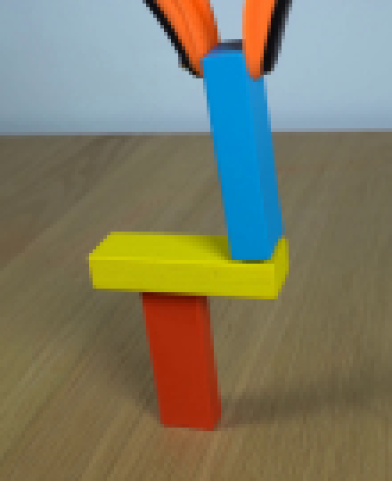
视觉工具实际返回图片 3
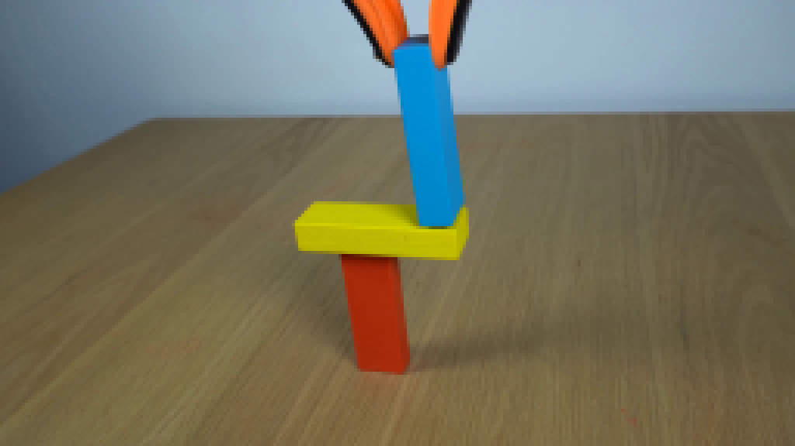
视觉工具实际返回图片 4
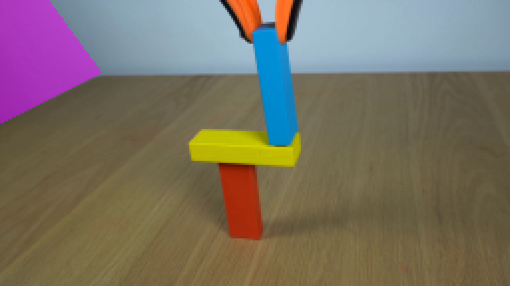
视觉工具实际返回图片 5
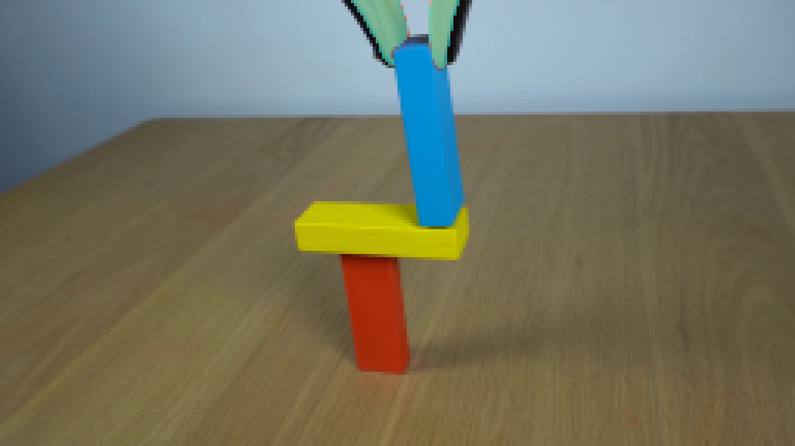
视觉工具实际返回图片 6
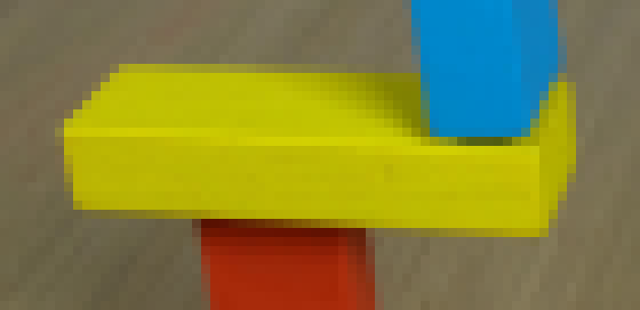
视觉工具实际返回图片 7
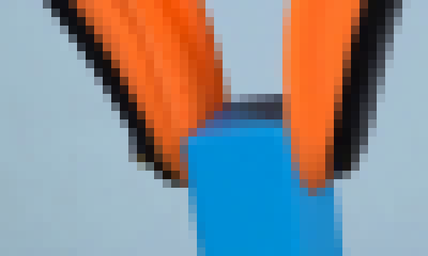
视觉工具实际返回图片 8
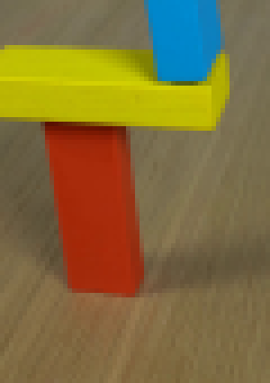
视觉工具实际返回图片 9
视觉工具实际返回图片 10
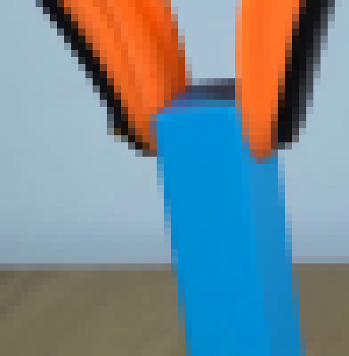
视觉工具实际返回图片 11
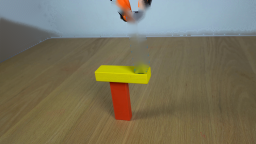
视觉工具实际返回图片 12
视觉工具实际返回图片 13
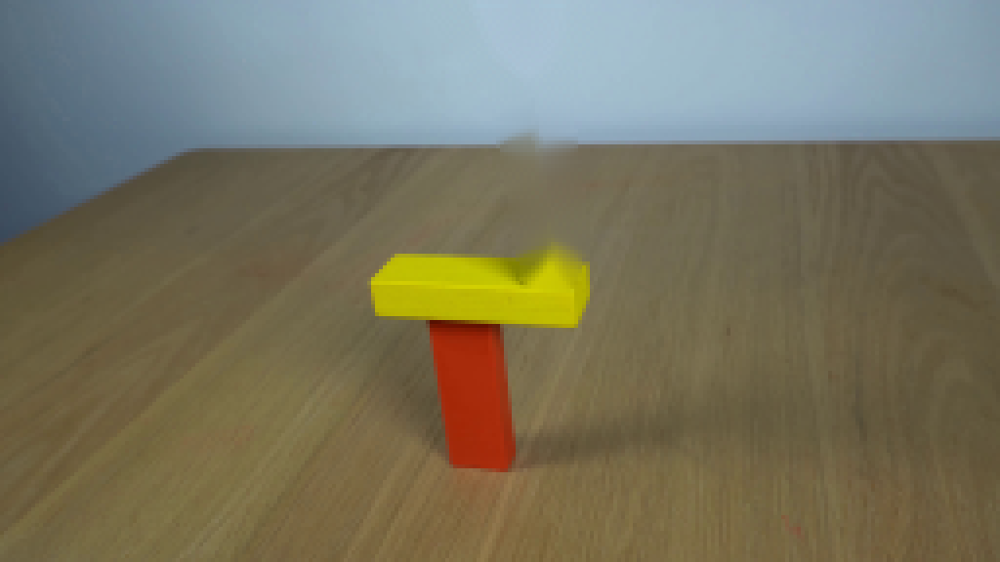
视觉工具实际返回图片 14
视觉工具实际返回图片 15
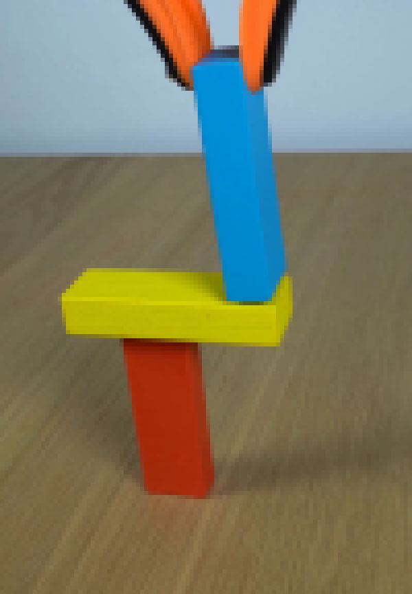
视觉工具实际返回图片 16
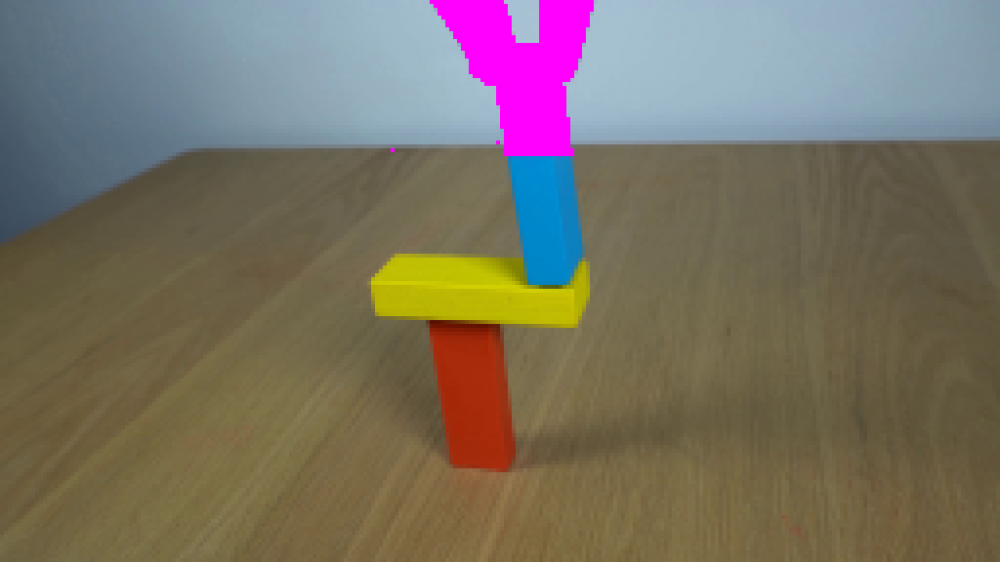
视觉工具实际返回图片 17
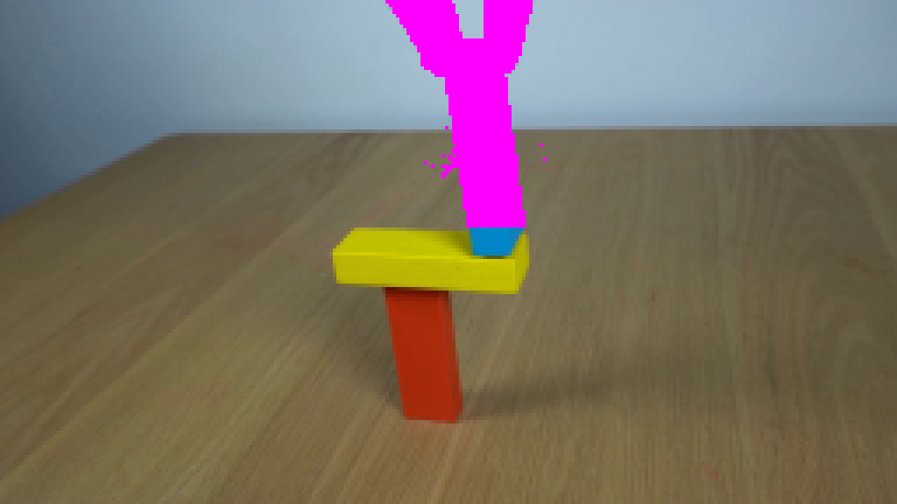
视觉工具实际返回图片 18
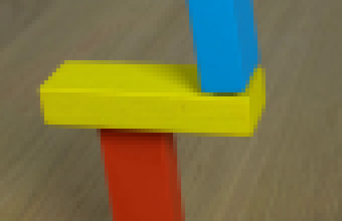
视觉工具实际返回图片 19
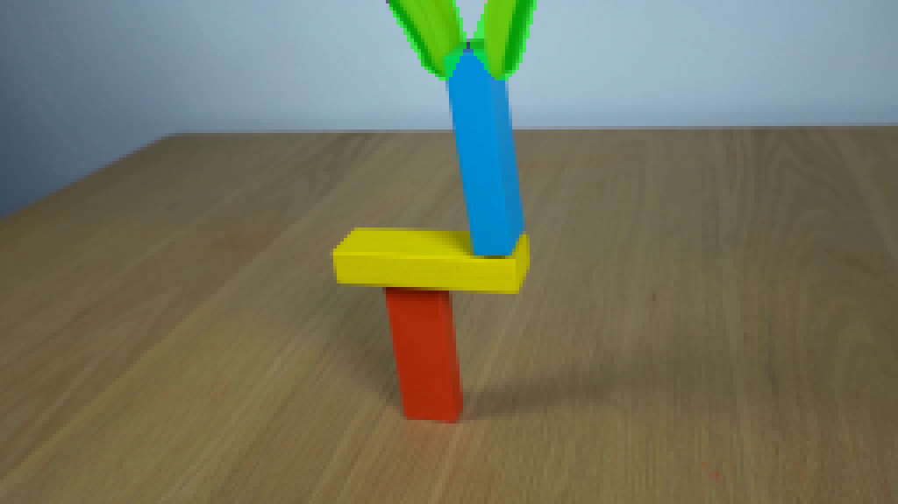
视觉工具实际返回图片 20
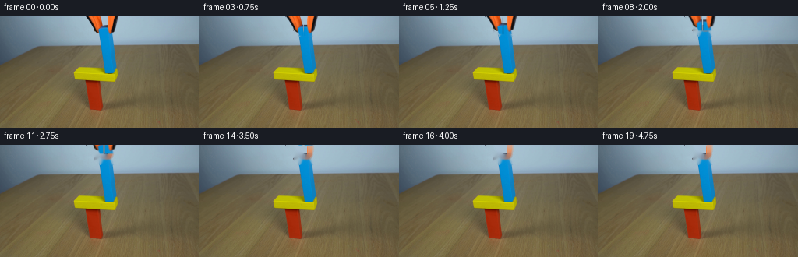
视觉工具实际返回图片 21
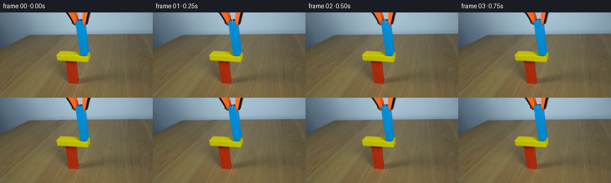
视觉工具实际返回图片 22
视觉工具实际返回图片 23
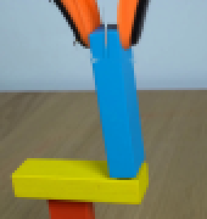
视觉工具实际返回图片 24
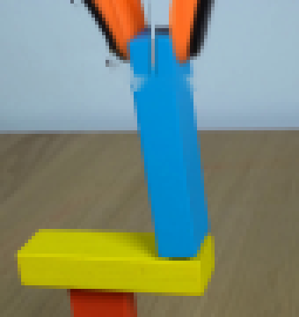
视觉工具实际返回图片 25
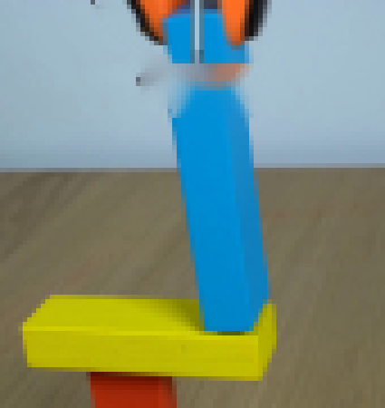
视觉工具实际返回图片 26

视觉工具实际返回图片 27
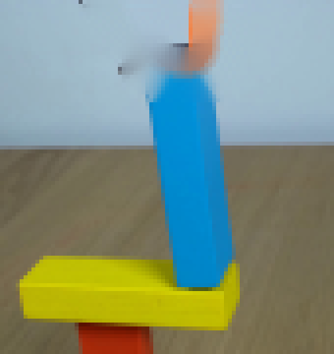
视觉工具实际返回图片 28
视觉工具实际返回图片 29
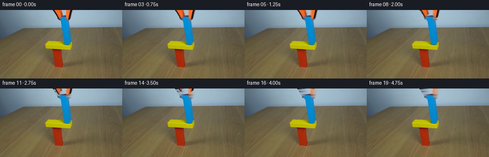
视觉工具实际返回图片 30
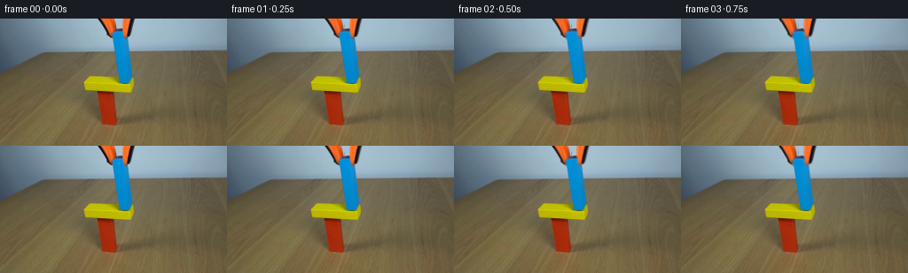
视觉工具实际返回图片 31
视觉工具实际返回图片 32
视觉工具实际返回图片 33
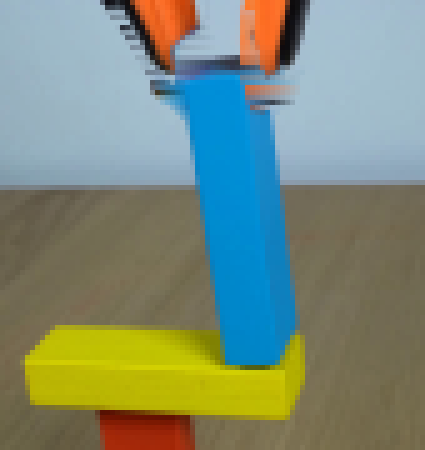
视觉工具实际返回图片 34
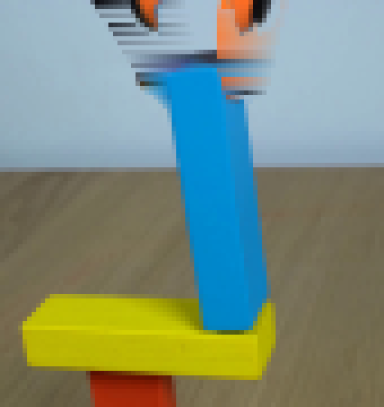
视觉工具实际返回图片 35
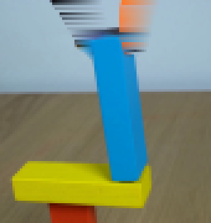
视觉工具实际返回图片 36

视觉工具实际返回图片 37
视觉工具实际返回图片 38
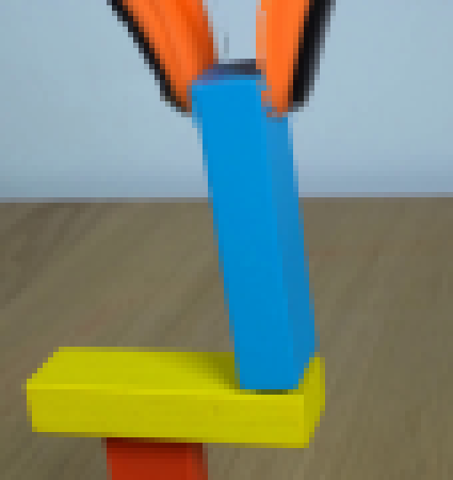
视觉工具实际返回图片 39
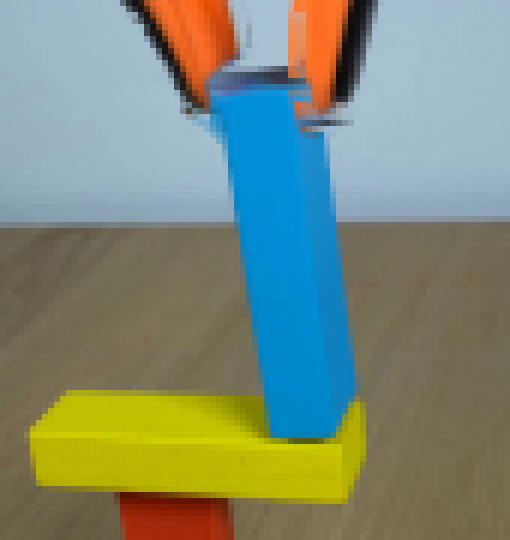
视觉工具实际返回图片 40
视觉工具实际返回图片 41
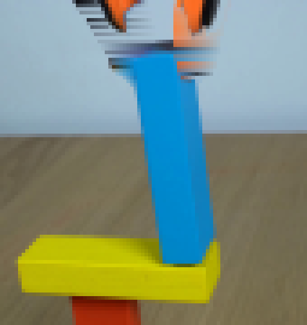
视觉工具实际返回图片 42
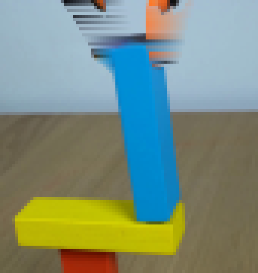
视觉工具实际返回图片 43
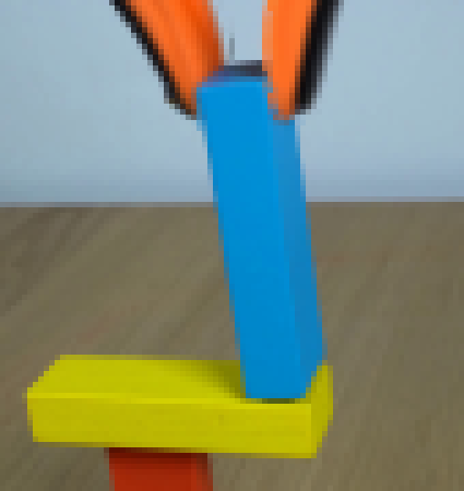
视觉工具实际返回图片 44
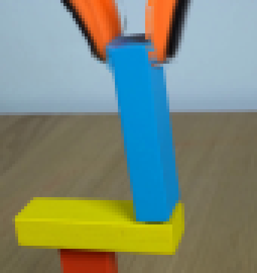
保存候选 3 份；完成命令 59 次；可验证图片返回 44 张。原始 API 响应与完整日志保留在本地。